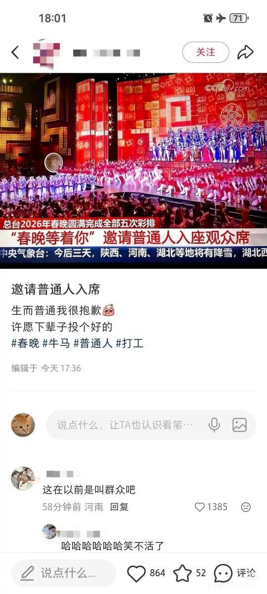

御坂 O.o 雪春📕 (掉fo版)（雪似梅花）
@0502railgun1949
只要碗里有菜心炒牛肉，家国情仇山河破碎又算得了什么，他们只抱怨现状，从不在乎理想。总需要一群勇敢的人保护着中华民族和他的人民，即便不被理解，即便受人中伤
你的做法也没有前途
我们现在还想要什么
只要还能生活在中国
每天就会有小恩小惠
还有最近刚刚得到的地位

御坂 O.o 雪春📕 (掉fo版)（雪似梅花）
@0502railgun1949
少数人的霓虹灯与舞旖旎
多数人的白炽灯与流水线
canton
今夜我为你哭泣
出租屋里的哭泣
是明天活着的信念 https://t.co/2MauZlQUSm